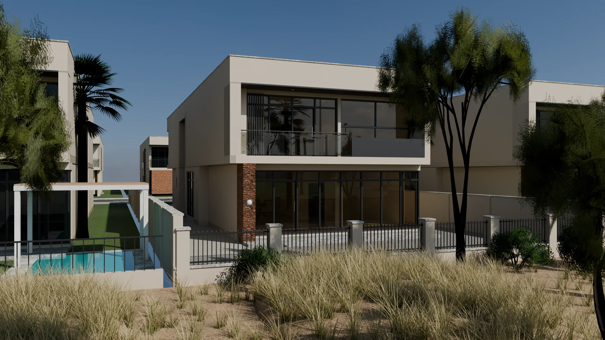
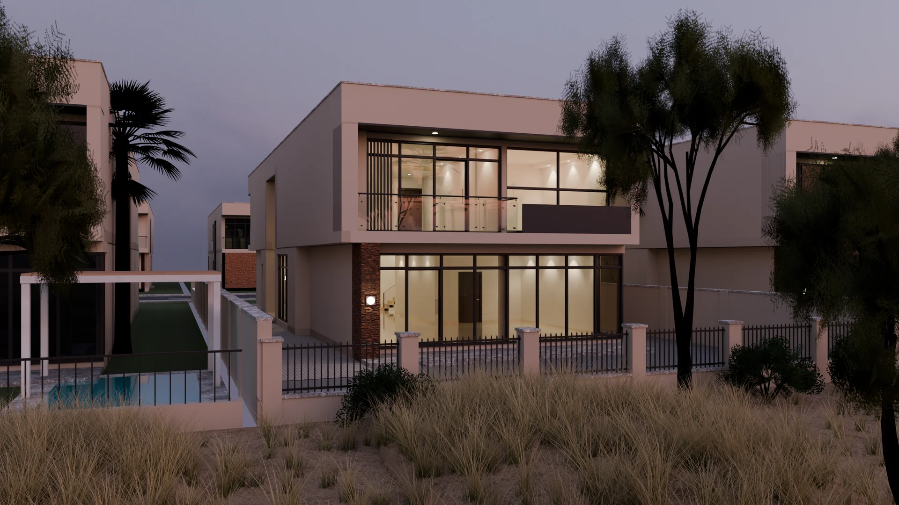
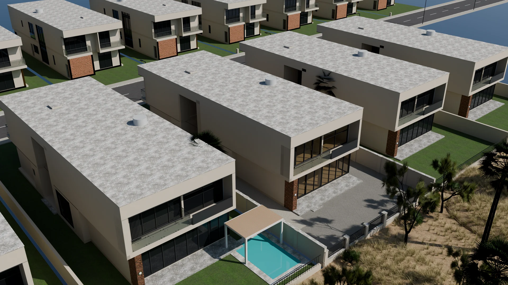

DAMAC Hills · Дубай · тип VD-1 «Golf View 1»
Отдельный дом в первой линии к полю: витражи в пол на гольф, второй свет у входа и над лестницей, балкон спальни хозяина с видом на акации, пальмы и озеро.
Оба этажа со всеми комнатами, кухней, санузлами и лестницей; двор, ограды, гольф с деревьями и соседние дома того же типа. Фотоскан-материалы, мягкие тени и затенение в углах; двери на петлях и раздвижные открываются, когда к ним подходишь.

Панорамы из Blender Cycles в каждой ключевой точке дома: смотрите во все стороны, переходите по меткам в соседние комнаты.
Та же модель в Blender Cycles: физическое небо (HDRI Poly Haven, откалибровано в люксах), солнце как в 3D-модели, фотоскан-текстуры, настоящая сухая трава рафа. Мебели нет — дом сдаётся пустым, как на видео.
Материалы, присланные агентом 01.11.2026 (Samantha Cross): фото фасада и гостиной, кадры трёх видео с балкона и из комнат.
Тип VD-1: поэтажные планы Bayut (Brookfield и The Turf, тот же план) и официальный план DAMAC «Villas at AKOYA». По ним модель построена в масштабе.
Размеры сняты с планов в масштабе (3 см на пиксель, сверено по площади, машине и дверям): дом 26,8 × 10,4 м, этаж 3,7 м. Погрешность планировки ±0,2–0,3 м.
Тип DAMAC VD-1 «Golf View 1» строился в кластерах Brookfield, Silver Springs, Whitefield, The Field и The Turf. Дом стоит фасадом с витражами к полю: перед гостиной — бетонная терраса, двор без озеленения, за низкой оградой с решёткой — раф с сухой травой, акации и пальмы, дальше фервей, озеро и прожекторы поля.
Модель и рендеры повторяют дом по планам и материалам с фото: бежевая штукатурка, тёмная рама второго этажа, пилон в рваном камне, бронзовое стекло в чёрных рамах, стеклянные ограждения на точечных креплениях, полированный керамогранит в комнатах.
Тип дома определён по фасаду, планировке и интерьеру на видео — агент его не подтверждала, номер дома неизвестен. Соседние дома показаны тем же типом, дальний ряд вилл и деревья — упрощённо. Цена не подтверждена.
Текстуры и небо — Poly Haven (CC0). 3D — three.js, рендеры — Blender Cycles.